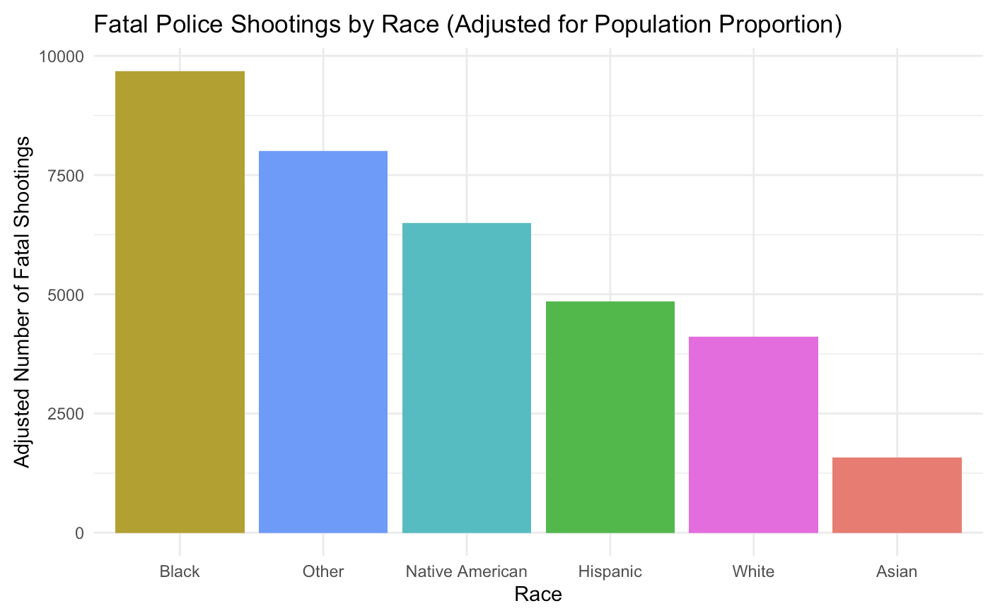

library(shiny)
library(leaflet)
library(dplyr)
library(readr)
library(usmap)
library(sf)
# Load the dataset
dataset <- read.csv("https://raw.githubusercontent.com/sussmanbu/ma-4615-fa24-final-project-group-thirteen/dcd006d271391a7e3622cf4dc7044365b3dedfab/dataset/merged_dataset_with_race.csv")
# dynamic color scaling
normalize_opacity <- function(value, min_value, max_value, min_opacity = 0.2, max_opacity = 1) {
return(min_opacity + (value - min_value) * (max_opacity - min_opacity) / (max_value - min_value)) }
# UI
ui <- fluidPage(
tags$style(HTML("
html, body {
height: 100%;
margin: 0;
padding: 0;
overflow: hidden; /* Disable scrolling */
}
#main-container {
display: flex;
flex-direction: row; /* Keep maps side by side */
height: 100vh; /* Full viewport height */
justify-content: center; /* Center maps */
}
#map1-container, #map2-container {
flex: 0 1 45%; /* 45% width for each map (with space in between) */
height: 60vh; /* Set the height of the maps (60% of the viewport height) */
margin: 10px; /* Optional: add some space between maps */}
.leaflet-container {
height: 100% !important; /* Fill parent container height */
width: 100% !important; /* Fill parent container width */}")),
div(id = "main-container",
div(id = "map1-container",
h3("States by Proportion of People of Color with Detailed Racial Breakdown"),
leafletOutput("map1")),
div(id = "map2-container",
h3("States by Fatal Police Shootings"),
HTML("<br><br>"),
leafletOutput("map2"))
))
# Server
server <- function(input, output, session) {
# US state map
states_map <- usmap::us_map("states")
states_sf <- st_as_sf(states_map)
states_sf <- st_transform(states_sf, crs = 4326)
states_sf <- states_sf %>%
rename("state" = "full")
# Join dataset with map
merged_map_data <- left_join(states_sf, dataset, by = "state")
merged_map_data <- merged_map_data %>%
filter(!is.na(POC_Proportion), !is.na(total_cases))
# min and max values for POC_Proportion
min_poc <- min(merged_map_data$POC_Proportion, na.rm = TRUE)
max_poc <- max(merged_map_data$POC_Proportion, na.rm = TRUE)
# First map for POC_Proportion
output$map1 <- renderLeaflet({
leaflet(merged_map_data,
options = leafletOptions(zoomControl = FALSE, scrollWheelZoom = FALSE)) %>%
addPolygons(
fillColor = "#390049",
color = "#BDBDC3",
weight = 1,
opacity = 1,
fillOpacity = ~normalize_opacity(POC_Proportion, min_poc, max_poc),
highlightOptions = highlightOptions(color = "white", weight = 2, bringToFront = TRUE),
popup = ~paste(
"<strong>", state, "</strong><br>", # Bold state name
"<ul>",
"<li><strong>POC Proportion:</strong> ", round(POC_Proportion * 100, 2), "%</li>",
"<li><strong>Black:</strong> ", round(proportion_Black * 100, 2), "%</li>",
"<li><strong>Hispanic:</strong> ", round(proportion_Hispanic * 100, 2), "%</li>",
"<li><strong>Asian:</strong> ", round(proportion_Asian * 100, 2), "%</li>",
"<li><strong>Native American:</strong> ", round(proportion_Native_American * 100, 2), "%</li>",
"<li><strong>Other:</strong> ", round(proportion_Other * 100, 2), "%</li>",
"<li><strong>White:</strong> ", round(proportion_White * 100, 2), "%</li>",
"</ul>"
),
layerId = ~state
) %>%
setView(lng = -98.5, lat = 37.5, zoom = 3) %>%
setMaxBounds(
lng1 = -125.0, lat1 = 24.396308,
lng2 = -66.93457, lat2 = 49.384358
)
})
# Second map for total_cases
min_cases <- min(merged_map_data$total_cases, na.rm = TRUE)
max_cases <- max(merged_map_data$total_cases, na.rm = TRUE)
output$map2 <- renderLeaflet({
leaflet(merged_map_data,
options = leafletOptions(zoomControl = FALSE, scrollWheelZoom = FALSE)) %>%
addPolygons(
fillColor = "#001E9E",
color = "#BDBDC3",
weight = 1,
opacity = 1,
fillOpacity = ~normalize_opacity(total_cases, min_cases, max_cases),
highlightOptions = highlightOptions(color = "white", weight = 2, bringToFront = TRUE),
label = ~paste(state, ": ", total_cases, " cases"),
layerId = ~state
) %>%
setView(lng = -98.5, lat = 37.5, zoom = 3) %>%
setMaxBounds(
lng1 = -125.0, lat1 = 24.396308,
lng2 = -66.93457, lat2 = 49.384358
)
})
}
# Run the app
shinyApp(ui = ui, server = server)Race and Policing
Exploring the Correlation Between Police Shootings and Proportions of People of Color in U.S. States
The Big Question:
Do states with higher populations of people of color experience more fatal police shootings?
In recent years, the issue of police shootings, particularly those involving people of color, has sparked intense debate across the U.S. But what if the frequency of these shootings is not just about individual cases or isolated incidents? What if the location and demographics of each state play a significant role? This project explores how the proportion of people of color in each state may influence the rate of fatal police shootings. It’s a conversation that is essential for understanding systemic issues within policing, and it’s a story you’ll explore through interactive data and compelling visualizations.
Our research suggests that there’s a connection: states with higher proportions of people of color tend to see more fatal police shootings. But we’re not just telling you that—this project lets you explore that question in detail through data, and gives you the tools to understand this important issue for yourself.
How You Can Explore the Data:
We’ve created interactive maps that let you compare the racial makeup of each state with the number of fatal police shootings. It’s an easy way to visually understand the connection between race and police violence. Here’s how to engage:
Map 1: Proportion of People of Color This map shows the percentage of people of color in each state. The darker the state, the higher the proportion of people of color living there.
Map 2: Fatal Police Shootings This map shows the total number of fatal police shootings by state. Again, darker states represent those with more shootings.
You can click on any state to get the exact numbers and compare them side by side. Do states with high proportions of people of color also have high numbers of police shootings? What patterns emerge as you explore the maps?
These interactive tools give you the power to see for yourself how race and policing are connected across the U.S.
A Deeper Look:
To add more context, we’ve also created a detailed figure that breaks down fatal police shootings by race, adjusted for population size. This means you can see which racial groups experience the most fatal police shootings relative to their size in the population.
- Fatal Police Shootings by Race (Adjusted for Population Proportion): This chart organizes racial groups from highest to lowest in terms of fatal shootings, giving you a clearer picture of who is most affected when taking population size into account. The chart shows the stark disparities in how different racial groups are impacted by police violence.

Why It Matters:
This is more than just data—it’s about understanding the larger picture. Our findings raise critical questions about the role that race plays in policing. By exploring this data, you can see firsthand how systemic issues affect different communities. It’s not just about statistics; it’s about real lives, real people, and the urgent need for reform.
By engaging with this project, you’re not just learning about data; you’re learning about the real-world implications of race and policing in America. It’s a chance to reflect, ask tough questions, and, most importantly, think about how we can create a more just society for everyone.
So, why should you care?
Because this issue affects all of us. Understanding the correlation between race and police shootings is crucial to pushing for meaningful change. By engaging with this project, you’re diving into an important conversation about race, justice, and equality in America.
Explore the data, draw your own conclusions, and become part of the conversation.